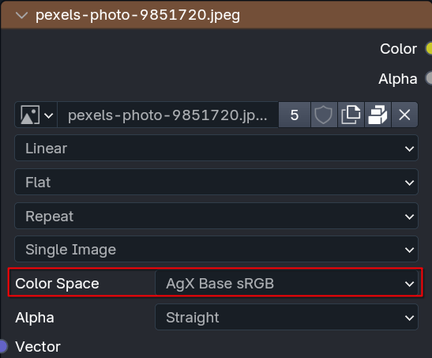
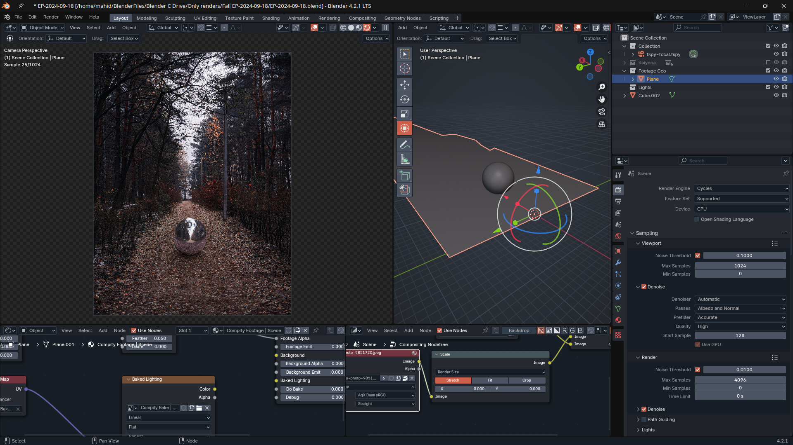
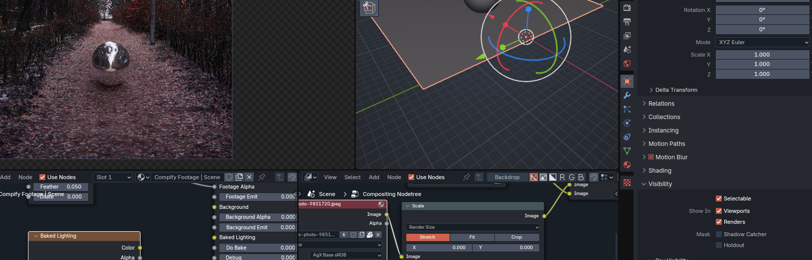
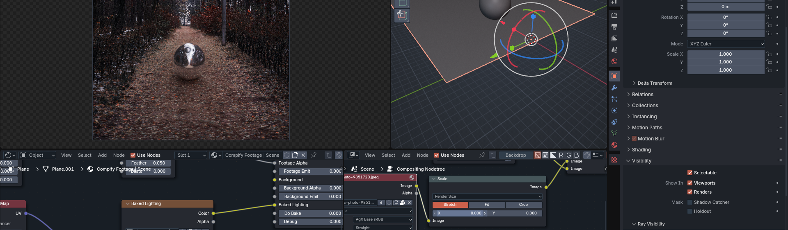
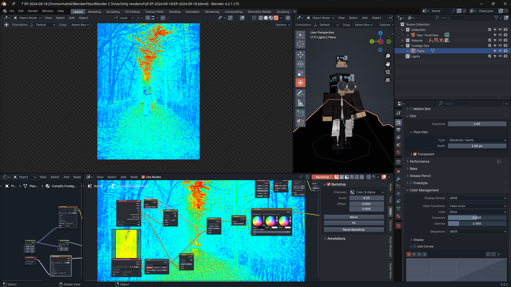

Recently I decided to try something new and try to composite together some
Minecraft stuff in real world photography. After a lot of work and sorcery,
here’s the results I came up with.

I’ll just talk about what I discovered while working on this, so this won’t be a tutorial. That said, this should still be interesting to anyone looking to try and do the same thing.
Lighting #
For this project, I started with this image from Pexels. Big mistake, don’t use random images when doing something like this. The issue is you then have to go through pain in order to replicate the lighting in the image. Please, for the purposes of simplicity, use an HDRI backplate as the image you’ll be compositing to, it’ll be way easier as you can just use the HDRI on its own. In addition, JPEGs don’t make for good HDRIs out of the box. I had to use 2 trick s to get this to work:
- Flipping
- Invert colorspace transforms
Flipping is easy, just mirroring the image across one axis, colorspace is the harder part. In Blender, one can inverse the OCIO transforms of an image to make a random image into a (very approximate) HDR. I’m not an expert, so I’ll just copy and paste a conversation I had with someone who is:
Me: But how does that work, I doubt the image uses AgX itself
Pedro: The important part is that it’s the exact inverse operation of the tonemaper, so if you chain the linearization->tonamep operations, it looks like absolutely nothing has changed.
Pedro: You’re right though, the image didn’t use AgX. The linearization step is a very rough approximation, based on the assumption that most photos will have had similar operations applied: Highlight compression, gamma encoding, a bit of contrast applied. That approximation is enough in most cases
Me: So basically it makes the JPEG not subject to tonemapping by Blender?
Pedro: A better way to put it would be that the final image looks like the starting image. The linearization is done when the image is loaded, and any operation done by the renderer (like casting emissive lighting) will benefit from more accurate values
In fancy terms, it makes images look how they started, which allows them to act like HDR images. To do this in Blender, you just set the colorspace on the image texture in the nodetree. 
The important thing is the colorspace must match the view transform you are using in Blender. If you’re using Filmic, set it to Filmic; if you’re using AgX, set it to AgX, etc.
Catching Shadows and De-lighting Textures #
Now we need to catch shadows in our scene. However, there is one piece of info I don’t see being talked about a lot: The material of the shadow catcher will still affect how objects interact with it, lighting wise. That means we can’t just leave our shadow catcher be, we have to use the texture, and it has to be a shader output too (in order for shadows to work), not a color output. That however causes the following issue: 
The ball is reflecting a purplish tint from the shadow catcher, which doesn’t match the ground in the actual image. If we uncheck the shadow catcher setting, we see why this happens: 
The shader on the shadow catcher doesn’t have the proper color on the texture. It’s
catching the purple-tinted light from the environment lighting. Therefore, we must
go through a complex, overly complicated, exclusive to Blender solution called de-lighting.
It’s as scary as it sounds. This video does a good job at explaining it, and I’ll
summarize their summary for those that don’t want to watch it (watch it though, it’s
extremely useful)
In a nutshell, if this is how our shadow catcher interacts with the HDRI (where \(I\) is the image’s lighting, \(S\) is the lighting in the 3D scene replicating the image, and \(R\) is the result): $$ I * S = R $$
In order for the result to look like the texture itself, we need to divide the image by the lighting in the scene that is used to replicate the lighting in the image:
$$ \dfrac{I}{S} * S = R $$
Which cancels out the scene lighting (\(S\)), and makes \(R\) be the texture itself, as if the texture was directly connected to the shader output, but now able to catch shadows. Or to show what it looks like: 
For this, I just used the Compify addon for simplicity, but the video above (which again, I highly recommend watching) also explains how to do it manually (tldr: bake the scene lighting on a pure white, diffuse material to a texture, and divide the original texture by the baked lighting in a Mix node, and plug the result into a diffuse BSDF)
Matching Exposure #
Out of the box, the brightness of the rendered image will not match the brightness of the image we’re compositing on. To solve this, we need to adjust the exposure of the render.
However just eyeballing is not enough, we need the brightness to absolutely match. This is where False Color helps. For example, as we can see with false color here, the character is darker then the path she’s walking on:
With this, we can then correctly expose the image so that in false color, the character’s brightness matches the brightness of the path. 
That’s pretty much all of the stuff I discovered along of the way of making this. Cya!